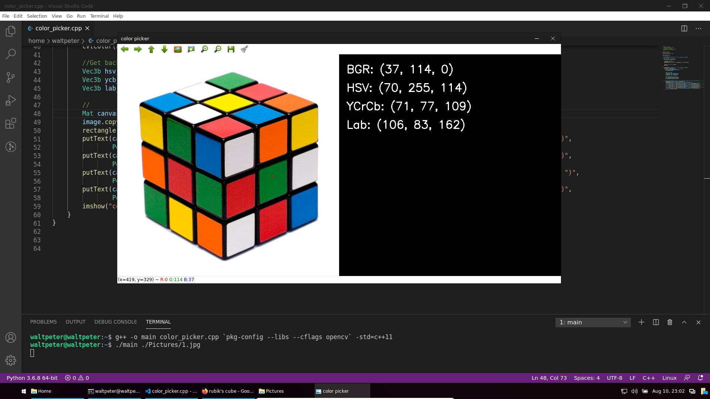
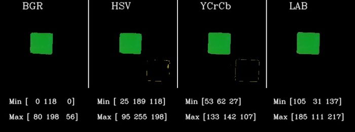
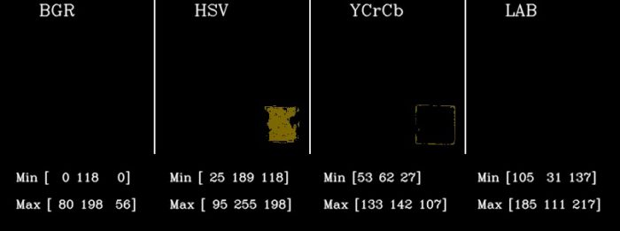
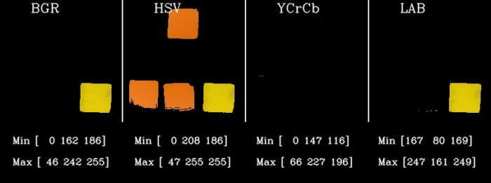
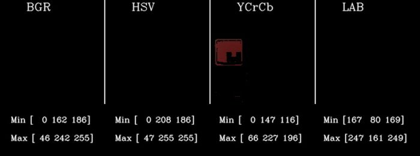
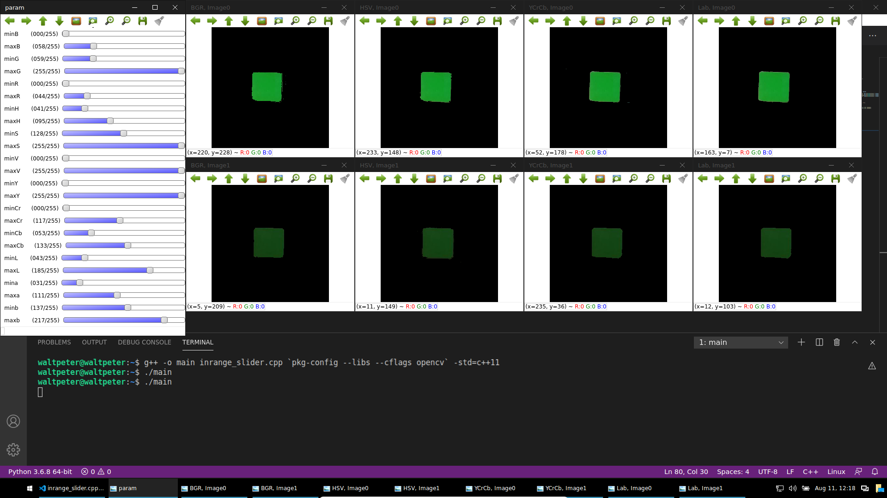

使用色彩空间分割图像
上一章我们学会了不同颜色空间的定义和特性。我们一样使用以下例子，但这次我们会使用颜色空间进行阈值式的图像分割。Mat bright = imread("cube1.jpg");
Mat dark = imread("cube8.jpg");
两张在不同明亮度拍摄的魔方照片

如何使用这些色彩空间进行图像切分
最简单的方法
现在我们对不同的色彩空间有了一些了解，让我们首先尝试使用它们从图像数据中检测绿色。步骤1：获取特定颜色的颜色值
可能你在想，如果我们要在图像中找绿色，我们首先得知道绿色像素的像素值。那你就对了！首先我们确实是要知道他的像素值。为此，我制作了一个交互式GUI，你可以通过将鼠标悬停在图像上来检查每个像素的所有颜色空间的值，如下所示：

该演示在户外图像的不同颜色空间中显示像素及其值
color_picker.cpp
#include <string>
#include <iostream>
#include <opencv2/opencv.hpp>
using namespace cv;
using namespace std;
void onMouseHandle(int event, int x, int y, int flags, void* param);
int main(int argc, char ** argv) {
Mat srcImage = imread(argv[1]);
//设置鼠标操作回调函数
namedWindow("color picker");
setMouseCallback("color picker", onMouseHandle, (void*) &srcImage);
//
imshow("color picker", srcImage);
waitKey(0);
}
void onMouseHandle(int event, int x, int y, int flags, void* param) {
Mat & image = *(Mat*) param;
if (event == CV_EVENT_MOUSEMOVE) { //鼠标移动消息
Vec3b bgr_pixel(image.at<Vec3b>(y,x));
Mat3b bgr(bgr_pixel);
//从BGR转换成HSV,YCrCb,Lab
Mat3b hsv,ycb,lab;
cvtColor(bgr, ycb, COLOR_BGR2YCrCb);
cvtColor(bgr, hsv, COLOR_BGR2HSV);
cvtColor(bgr, lab, COLOR_BGR2Lab);
//从Mat得回Vec
Vec3b hsv_pixel(hsv.at<Vec3b>(0,0));
Vec3b ycb_pixel(ycb.at<Vec3b>(0,0));
Vec3b lab_pixel(lab.at<Vec3b>(0,0));
//显示结果
Mat canvas(max(image.size().height, 200), image.size().width + 600, CV_8UC3, Scalar(0,0,0)); //创建空Mat
image.copyTo(canvas(Rect(Point(0,0), image.size()))); //把图像复制到canvas的左边
rectangle(canvas, Point(x-2,y-2), Point(x+2,y+2), Scalar(0,0,255), 1); //显示当前像素位置
//显示像素值
putText(canvas, "BGR: (" + to_string(bgr_pixel.val[0]) + ", " + to_string(bgr_pixel.val[1]) + ", " + to_string(bgr_pixel[2]) + ")",
Point(image.size().width + 20, 50), FONT_HERSHEY_SIMPLEX, 1, Scalar(255,255,255), 2);
putText(canvas, "HSV: (" + to_string(hsv_pixel.val[0]) + ", " + to_string(hsv_pixel.val[1]) + ", " + to_string(hsv_pixel[2]) + ")",
Point(image.size().width + 20, 100), FONT_HERSHEY_SIMPLEX, 1, Scalar(255,255,255), 2);
putText(canvas, "YCrCb: (" + to_string(ycb_pixel.val[0]) + ", " + to_string(ycb_pixel.val[1]) + ", " + to_string(ycb_pixel[2]) + ")",
Point(image.size().width + 20, 150), FONT_HERSHEY_SIMPLEX, 1, Scalar(255,255,255), 2);
putText(canvas, "Lab: (" + to_string(lab_pixel.val[0]) + ", " + to_string(lab_pixel.val[1]) + ", " + to_string(lab_pixel[2]) + ")",
Point(image.size().width + 20, 200), FONT_HERSHEY_SIMPLEX, 1, Scalar(255,255,255), 2);
imshow("color picker", canvas);
}
}备注：
以上代码使用了c++11标准编程，在g++编译的时候必须添加“标准”tag，即：
然后
以上代码使用了c++11标准编程，在g++编译的时候必须添加“标准”tag，即：
g++ -o main color_picker.cpp `pkg-config --libs --cflags opencv` -std=c++11
然后
./main [到图像的路径]运行。
第2步：应用细分阈值
得到了颜色的像素值，可能你会想用这个像数值在整个图像的每一个像素，判断那个像素的值是不是和颜色的像数值一样。但现实情况并不是那么理想。同样的颜色，即使肉眼看似它们没什么差别，但是由于光线或设备的影响它们的像素值还是有一定差别的。面对这种情况，第一时间你想到的或许是与其判断像素值是不是一样，倒不如我们设一个“邻近范围”，在范围内的像素都判断为吻合。我们来测试下结果：在下面这个测试中，我为每个色彩空间采用+/- 40的范围，并检查结果。我们将使用opencv中的inRange函数过滤出在范围中的绿色像素蒙版，然后使用bitwise_and操作使用该蒙版从图像中获取绿色像素。
inrange_1.cpp
...
Vec3b bgrPixel(40, 158, 16);
// Create Mat object from vector since cvtColor accepts a Mat object
Mat3b bgr (bgrPixel);
//Convert pixel values to other color spaces.
Mat3b hsv,ycb,lab;
cvtColor(bgr, ycb, COLOR_BGR2YCrCb);
cvtColor(bgr, hsv, COLOR_BGR2HSV);
cvtColor(bgr, lab, COLOR_BGR2Lab);
//Get back the vector from Mat
Vec3b hsvPixel(hsv.at<Vec3b>(0,0));
Vec3b ycbPixel(ycb.at<Vec3b>(0,0));
Vec3b labPixel(lab.at<Vec3b>(0,0));
int thresh = 40;
Scalar minBGR = Scalar(bgrPixel.val[0] - thresh, bgrPixel.val[1] - thresh, bgrPixel.val[2] - thresh);
Scalar maxBGR = Scalar(bgrPixel.val[0] + thresh, bgrPixel.val[1] + thresh, bgrPixel.val[2] + thresh);
Mat maskBGR, resultBGR;
inRange(bright, minBGR, maxBGR, maskBGR);
bitwise_and(bright, bright, resultBGR, maskBGR);
Scalar minHSV = Scalar(hsvPixel.val[0] - thresh, hsvPixel.val[1] - thresh, hsvPixel.val[2] - thresh);
Scalar maxHSV = Scalar(hsvPixel.val[0] + thresh, hsvPixel.val[1] + thresh, hsvPixel.val[2] + thresh);
Mat maskHSV, resultHSV;
inRange(brightHSV, minHSV, maxHSV, maskHSV);
bitwise_and(brightHSV, brightHSV, resultHSV, maskHSV);
Scalar minYCrCb = Scalar(ycbPixel.val[0] - thresh, ycbPixel.val[1] - thresh, ycbPixel.val[2] - thresh);
Scalar maxYCrCb = Scalar(ycbPixel.val[0] + thresh, ycbPixel.val[1] + thresh, ycbPixel.val[2] + thresh);
Mat maskYCrCb, resultYCrCb;
inRange(brightYCrCb, minYCrCb, maxYCrCb, maskYCrCb);
bitwise_and(brightYCrCb, brightYCrCb, resultYCrCb, maskYCrCb);
Scalar minLAB = Scalar(labPixel.val[0] - thresh, labPixel.val[1] - thresh, labPixel.val[2] - thresh);
Scalar maxLAB = Scalar(labPixel.val[0] + thresh, labPixel.val[1] + thresh, labPixel.val[2] + thresh);
Mat maskLAB, resultLAB;
inRange(brightLAB, minLAB, maxLAB, maskLAB);
bitwise_and(brightLAB, brightLAB, resultLAB, maskLAB);
imshow("Result BGR", resultBGR);
imshow("Result HSV", resultHSV);
imshow("Result YCrCb", resultYCrCb);
imshow("Output LAB", resultLAB);
...解释：
Vec3b bgrPixel(40, 158, 16);
这行是之前我们得到的颜色像数值。类型为一个3字节的vector（相当于CV_8U类型内的一个像素，但是是1D）
Mat3b bgr (bgrPixel);
//Convert pixel values to other color spaces.
Mat3b hsv,ycb,lab;
cvtColor(bgr, ycb, COLOR_BGR2YCrCb);
cvtColor(bgr, hsv, COLOR_BGR2HSV);
cvtColor(bgr, lab, COLOR_BGR2Lab);
//Get back the vector from Mat
Vec3b hsvPixel(hsv.at<Vec3b>(0,0));
Vec3b ycbPixel(ycb.at<Vec3b>(0,0));
Vec3b labPixel(lab.at<Vec3b>(0,0));
由于cvtColor()函数只能输入Mat类型，所以我们先把1D的bgrPixel转换成Mat，然后再用cvtColor()函数算出对应的HSV,YCrCb和Lab数值。然后又再把Mat类型换回Vec3b类型。
int thresh = 40;
这里设置了可允许的范围为+/-40。只要输入像素的每个通道值在目标颜色值左右40的都算它吻合。
Scalar minBGR = Scalar(bgrPixel.val[0] - thresh, bgrPixel.val[1] - thresh, bgrPixel.val[2] - thresh);
Scalar maxBGR = Scalar(bgrPixel.val[0] + thresh, bgrPixel.val[1] + thresh, bgrPixel.val[2] + thresh);
Mat maskBGR, resultBGR;
inRange(bright, minBGR, maxBGR, maskBGR);
bitwise_and(bright, bright, resultBGR, maskBGR);
inRange()函数需要我们设定一个上限和下限值，两个都是Scalar类型。所以我们先从目标像素值中计算出上限和下限。然后使用inRange()函数，输出蒙版到maskBGR. 因为蒙版是个二进制的矩阵，他只告诉你哪个位置的像素在范围内与相反，为了达到“分割原图”的功效，我们加个和运算(bitwise_and)。效果分析
我们先分割第一张图像接下来我们测试较暗的照片
每个颜色空间的效果都还算满意
因此，相同的阈值不适用于较暗的图像。
使用相同的阈值，可见每个颜色空间都无法检测所有颜色空间中的绿色像素。
进行相同的实验以检测黄色，得出以下结果。

尝试使用相同的手法从较亮图像获得的阈值（对于黄色）检测图中黄色像素。HSV和YCrCb仍然表现不佳。
但是为什么结果这么差呢？ 这是因为我们对阈值进行了疯狂的猜测（设置为40）。我们不能只是盲目地尝试和尝试一些门槛。我们这样做并不是在利用色彩空间的力量。
尝试使用相同的阈值检测黄色碎片，所有颜色空间再次失败。
我们需要有一些系统性的方法来找到正确的阈值。
第3步：细调阈值
使用滚动条方式细调阈值已达最好效果。
inrange_slider.cpp
#include <string>
#include <vector>
#include <iostream>
#include <opencv2/opencv.hpp>
using namespace cv;
using namespace std;
vector<Mat> srcImages;
vector<vector<int> > minRange, maxRange;
vector<String> colorSpaceName, channelName;
void callback(int,void*);
int main() {
// 所有图像路径并读取
vector<String> imgPaths{"./Pictures/cube1.png", "./Pictures/cube2.png"};
for (int i=0; i < imgPaths.size(); ++i) {
srcImages.push_back(imread(imgPaths[i]));
}
// 获取初始范围值
Mat3b bgr(Vec3b(40, 158, 16));
//Convert pixel values to other color spaces.
Mat3b hsv, ycb, lab;
cvtColor(bgr, ycb, COLOR_BGR2YCrCb);
cvtColor(bgr, hsv, COLOR_BGR2HSV);
cvtColor(bgr, lab, COLOR_BGR2Lab);
int thresh = 40;
vector<int> minBGR, maxBGR, minHSV, maxHSV, minYCrCb, maxYCrCb, minLab, maxLab;
for (int i=0; i<3; ++i) {
minBGR.push_back (bgr.at<Vec3b>(0,0)[i] - thresh); maxBGR.push_back (bgr.at<Vec3b>(0,0)[i] + thresh);
minHSV.push_back (hsv.at<Vec3b>(0,0)[i] - thresh); maxHSV.push_back (hsv.at<Vec3b>(0,0)[i] + thresh);
minYCrCb.push_back(ycb.at<Vec3b>(0,0)[i] - thresh); maxYCrCb.push_back(ycb.at<Vec3b>(0,0)[i] + thresh);
minLab.push_back (lab.at<Vec3b>(0,0)[i] - thresh); maxLab.push_back (lab.at<Vec3b>(0,0)[i] + thresh);
}
//统一到minRange和maxRange列中
minRange = {minBGR, minHSV, minYCrCb, minLab};
maxRange = {maxBGR, maxHSV, maxYCrCb, maxLab};
//定义颜色空间名和通道名
colorSpaceName = {"BGR", "HSV", "YCrCb", "Lab"};
channelName = {"B", "G", "R", "H", "S", "V", "Y", "Cr", "Cb", "L", "a", "b"};
//创建窗口与拉动条
namedWindow("param",0);
for (int i=0; i<colorSpaceName.size(); ++i) {
for (int j=0; j<3; ++j) {
createTrackbar("min"+channelName[i*3+j], "param", &minRange[i][j], 255, callback);
createTrackbar("max"+channelName[i*3+j], "param", &maxRange[i][j], 255, callback);
}
}
callback(0,0);
//按下任何键退出程序
waitKey(0);
destroyAllWindows();
return 0;
}
//每次任何一个拉动条被拉动时都会被call的函数
void callback(int,void*) {
//每个颜色空间
for (int i=0; i<colorSpaceName.size(); ++i) {
Scalar minValue(minRange[i][0], minRange[i][1], minRange[i][2]);
Scalar maxValue(maxRange[i][0], maxRange[i][1], maxRange[i][2]);
//每个原始图像
for (int j=0; j<srcImages.size(); ++j) {
Mat imageCopy, mask, result;
srcImages[j].copyTo(imageCopy);
//颜色空间转换
if (colorSpaceName[i] == "HSV") {
cvtColor(imageCopy, imageCopy, COLOR_BGR2HSV);
} else if (colorSpaceName[i] == "YCrCb") {
cvtColor(imageCopy, imageCopy, COLOR_BGR2YCrCb);
} else if (colorSpaceName[i] == "Lab") {
cvtColor(imageCopy, imageCopy, COLOR_BGR2Lab);
}
//阈值
inRange(imageCopy, minValue, maxValue, mask);
bitwise_and(srcImages[j], srcImages[j], result, mask);
imshow(colorSpaceName[i]+", Image" + to_string(j), result);
}
}
}备注：这个程序也需C++11标准
拖动拉动条，我们能获取更适合的阈值。当然，本示范只用了两张照片测试。现实中我们得尽量地使用更多的图像使得精度更加提升。后处理
有些时候拿到的蒙版并不是那么理想：会有些黑洞口和一些白色杂质。作为后处理，我们能使用腐蚀、膨胀与滤波去除这些不必要的杂质。色彩空间的其他有用应用
- 直方图均衡化通常在灰度图像上完成。但是，可以通过将RGB图像转换为YCbCr并仅对Y通道进行直方图均衡来对彩色图像进行均衡。
- 通过将图像转换为Lab色彩空间，在两个图像之间进行颜色转移。
- 智能手机相机应用程序（例如Google相机或Instagram）中的许多滤镜都利用这些颜色空间转换来创建这些炫酷效果！